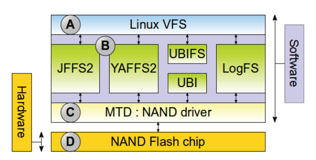
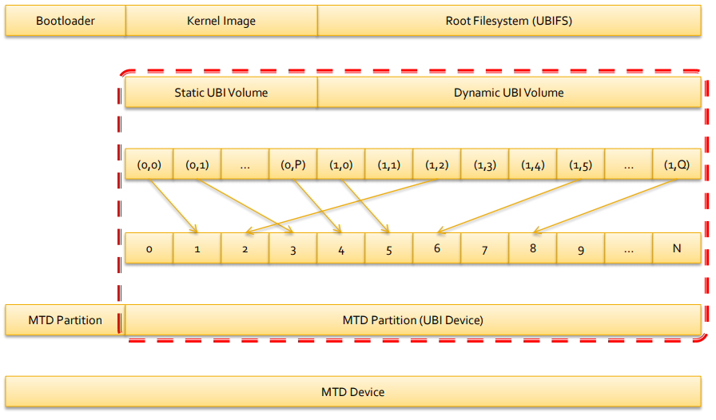
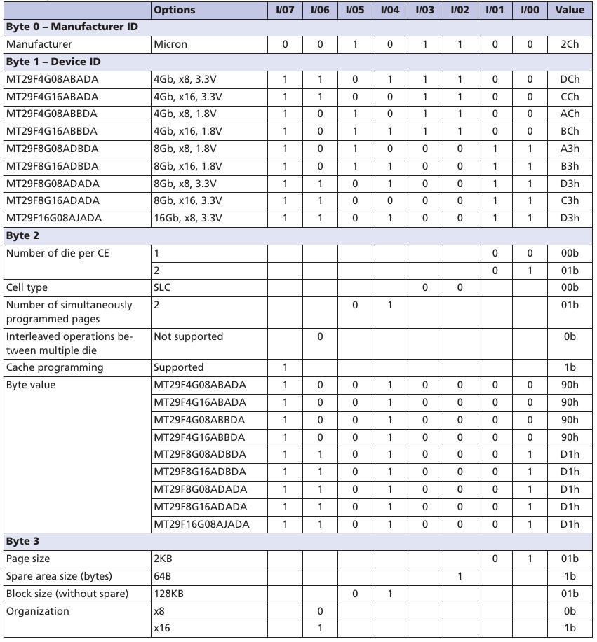
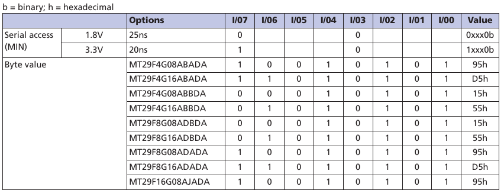
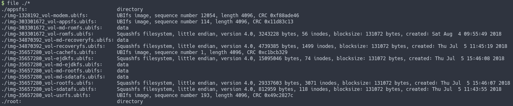

固件提取系列-UBI文件系统提取以及重打包
固件提取系列-UBI文件系统提取以及重打包
前言
去年写的，不小心把github仓库弄成私有，Readme没了，重新传了个Readme，觉得有点不好意思。先把这篇文章放出来吧
UBI(Unsorted Block Images)全称未分类块镜像。由IBM公司设计，是一个基于Raw Flash设备的卷管理系统，可以在单个物理设备上管理多个逻辑卷，并且支持耗损均衡(wear-leveling)。广泛应用于嵌入式设备。
提到Raw Flash，就要解释一下什么是MTD(Memory Technology Device)。MTD是用于访问Memory设备(尤其是Flash设备)的一个Linux子系统，作为硬件和文件系统之间的抽象层。以NAND Flash为例，MTD对NAND flash封装，为上层文件系统驱动提供抽象接口。MTD设备由擦除块(Eraseblocks)组成，MTD驱动提供了读写和擦除三种操作，但是在修改每个块之前都要先擦除。

UBI结构
UBI有点像LVM(Logical Volume Management)，LVM提供逻辑扇区到物理扇区的映射，而UBI提供逻辑擦除块(LEB)到物理擦除块(PEB)的映射。从上述可知，UBI是以块为单位操作的。
在每个UBI块（非坏块）的头部，有两个长度为64字节的头信息。
- EC header(erase counter header)，包含了每个PEB的信息(VID的偏移，数据的偏移)。
- VID Header(volume identifier header)，包含了卷ID和LEB对应PEB的编号。
在Linux源码/linux/drivers/mtd/ubi目录，ubi-media.h内，有EC header和VID header的定义。
1
2
3
4
5
6
7
8
9
10
11struct ubi_ec_hdr {
__be32 magic; // UBI#
__u8 version; // 01
__u8 padding1[3];
__be64 ec; /* Warning: the current limit is 31-bit anyway! */
__be32 vid_hdr_offset; // VID Header 的偏移
__be32 data_offset; // 数据的偏移
__be32 image_seq; // 物理块序号
__u8 padding2[32];
__be32 hdr_crc; // CRC32
} __packed;
1
2
3
4
5
6
7
8
9
10
11
12
13
14
15
16
17
18
19
20
21
22
23
24
25
26
27
28
29/*
* UBI volume type constants.
*
* @UBI_DYNAMIC_VOLUME: dynamic volume
* @UBI_STATIC_VOLUME: static volume
*/
enum {
UBI_DYNAMIC_VOLUME = 3,
UBI_STATIC_VOLUME = 4,
};
struct ubi_vid_hdr {
__be32 magic; // UBI!
__u8 version; // 1
__u8 vol_type; // 一般是UBI_DYNAMIC_VOLUME
__u8 copy_flag; // 是否从另一个物理块拷贝过来的(wear-leveling)
__u8 compat; // 卷兼容性
__be32 vol_id; // 卷ID
__be32 lnum; // LEB编号
__u8 padding1[4];
__be32 data_size; // 数据大小
__be32 used_ebs; // 用户LEB数量
__be32 data_pad;
__be32 data_crc;
__u8 padding2[4];
__be64 sqnum; // 序号
__u8 padding3[12];
__be32 hdr_crc; // CRC32
} __packed;
ID为UBI_INTERNAL_VOL_START的卷，专门用来存放分卷表的记录。
1
其中包含卷名
1
2
3
4
5
6
7
8
9
10
11
12struct ubi_vtbl_record {
__be32 reserved_pebs;
__be32 alignment;
__be32 data_pad;
__u8 vol_type;
__u8 upd_marker;
__be16 name_len; // 卷名长度
__u8 name[UBI_VOL_NAME_MAX+1]; // 卷名
__u8 flags;
__u8 padding[23];
__be32 crc; // CRC32
} __packed;
一个MTD设备前面的部分一般用于存放Bootloader，后面用于UBI。下图只是一个简单的举例，实际情况可能是多个UBI和其他分区间接排列。UBI使用fastmap将LEB到映射到乱序的PEB，为UBIFS提供抽象接口。

挂载UBIFS
MTD为提供了直接操作UBI的工具：MTD-Utils
http://git.infradead.org/mtd-utils.git
- ubinfo - provides information about UBI devices and volumes found in the system;
- ubiattach - attaches MTD devices (which describe raw flash) to UBI and creates corresponding UBI devices;
- ubidetach - detaches MTD devices from UBI devices (the opposite to what ubiattach does);
- ubimkvol - creates UBI volumes on UBI devices;
- ubirmvol - removes UBI volumes from UBI devices;
- ubiblock - manages block interfaces for UBI volumes. See here for more information;
- ubiupdatevol - updates UBI volumes; this tool uses the UBI volume update feature which leaves the volume in "corrupted" state if the update was interrupted; additionally, this tool may be used to wipe out UBI volumes;
- ubicrc32 - calculates CRC-32 checksum of a file with the same initial seed as UBI would use;
- ubinize - generates UBI images;
- ubiformat - formats empty flash, erases flash and preserves erase counters, flashes UBI images to MTD devices;
- mtdinfo - reports information about MTD devices found in the system.
上面的工具只能操作UBI，而一般电脑上没有MTD设备。当从嵌入式设备提取了原始的Flash固件，想要在电脑上读取，可以使用来模拟一个MTD设备。一般情况下，会使用到NANDSim。
- mtdram which simulates NOR flash in RAM;
- nandsim which simulates NAND flash in RAM;
- block2mtd which simulates NOR flash on top of a block device;
首先看NANDSim的参数，一大堆参数该如何配置呢？
1
2
3
4
5
6
7
8
9
10
11
12
13
14
15
16
17
18
19
20
21
22
23
24
25
26
27
28
29
30
31
32
33
34
35
36
37
38
39
40$ modinfo nandsim
filename: /lib/modules/4.18.10-arch1-1-ARCH/kernel/drivers/mtd/nand/raw/nandsim.ko.xz
description: The NAND flash simulator
author: Artem B. Bityuckiy
license: GPL
srcversion: D2FD00330F9BE30A9B28365
depends: mtd,nand
retpoline: Y
intree: Y
name: nandsim
vermagic: 4.18.10-arch1-1-ARCH SMP preempt mod_unload modversions
sig_id: PKCS#7
signer:
sig_key:
sig_hashalgo: md4
signature:
parm: id_bytes:The ID bytes returned by NAND Flash 'read ID' command (array of byte)
parm: first_id_byte:The first byte returned by NAND Flash 'read ID' command (manufacturer ID) (obsolete) (byte)
parm: second_id_byte:The second byte returned by NAND Flash 'read ID' command (chip ID) (obsolete) (byte)
parm: third_id_byte:The third byte returned by NAND Flash 'read ID' command (obsolete) (byte)
parm: fourth_id_byte:The fourth byte returned by NAND Flash 'read ID' command (obsolete) (byte)
parm: access_delay:Initial page access delay (microseconds) (uint)
parm: programm_delay:Page programm delay (microseconds (uint)
parm: erase_delay:Sector erase delay (milliseconds) (uint)
parm: output_cycle:Word output (from flash) time (nanoseconds) (uint)
parm: input_cycle:Word input (to flash) time (nanoseconds) (uint)
parm: bus_width:Chip's bus width (8- or 16-bit) (uint)
parm: do_delays:Simulate NAND delays using busy-waits if not zero (uint)
parm: log:Perform logging if not zero (uint)
parm: dbg:Output debug information if not zero (uint)
parm: parts:Partition sizes (in erase blocks) separated by commas (array of ulong)
parm: badblocks:Erase blocks that are initially marked bad, separated by commas (charp)
parm: weakblocks:Weak erase blocks [: remaining erase cycles (defaults to 3)] separated by commas e.g. 113:2 means eb 113 can be erased only twice before failing (charp)
parm: weakpages:Weak pages [: maximum writes (defaults to 3)] separated by commas e.g. 1401:2 means page 1401 can be written only twice before failing (charp)
parm: bitflips:Maximum number of random bit flips per page (zero by default) (uint)
parm: gravepages:Pages that lose data [: maximum reads (defaults to 3)] separated by commas e.g. 1401:2 means page 1401 can be read only twice before failing (charp)
parm: overridesize:Specifies the NAND Flash size overriding the ID bytes. The size is specified in erase blocks and as the exponent of a power of two e.g. 5 means a size of 32 erase blocks (uint)
parm: cache_file:File to use to cache nand pages instead of memory (charp)
parm: bbt:0 OOB, 1 BBT with marker in OOB, 2 BBT with marker in data area (uint)
parm: bch:Enable BCH ecc and set how many bits should be correctable in 512-byte blocks (uint)
可以去阅读内核驱动源码来了解NANDSim的实现，这里简单说明一下。首先由nandsim.c 调用nand_base.c中的nand_scan_ident，在nand_detect中会进行Read ID操作，nand_readid_op对NAND发送0x90,0x00。随后在nand_get_manufacturer，匹配厂商ID，最后在nand_scan_tail中初始化NAND芯片，设置各项属性。
NANDFlash的芯片手册会表明ID的具体参数
所以我们需要将ID设定正确，驱动会根据ID自动设置容量，页大小等数据。在NANDSim的参数只需要前四项。
1
2
3
4
5
6
7static u_char id_bytes[8] = {
[0] = CONFIG_NANDSIM_FIRST_ID_BYTE,
[1] = CONFIG_NANDSIM_SECOND_ID_BYTE,
[2] = CONFIG_NANDSIM_THIRD_ID_BYTE,
[3] = CONFIG_NANDSIM_FOURTH_ID_BYTE,
[4 ... 7] = 0xFF,
};
如果需要调整模拟NAND的参数，可以根据芯片手册上的数据表来选择。


一般情况下，嵌入式设备的bootloader等其他分区都会和系统分区放在同一个芯片内。因此需要对NANDSim分区，该芯片的eraseblocks以128KB为单位，也就是0x20000。
写一个脚本来寻找UBI的分布
1
2
3
4
5
6
7
8
9
10
11
12
13
14
15
16
17
18
19
20
21
22
23
24
25
26
27
28
29#!/usr/bin/env python3
import sys
import binascii
import struct
if len(sys.argv) < 1:
print("Usage: find_ubi_header.py NAND.bin")
sys.exit(1)
raw_file_path = sys.argv[1]
ubi_header = b'UBI#'
out_of_ubi = True
try:
with open(raw_file_path, 'rb') as raw_file:
rawbin = raw_file.read()
for x in range(0, len(rawbin), 0x20000):
magic = rawbin[x:x+4]
if magic == ubi_header:
if out_of_ubi:
out_of_ubi = False
print("\nUBI offset start:", hex(x))
else:
if not out_of_ubi:
print("UBI offset stop:", hex(x), "\n")
out_of_ubi = True
raw_file.close()
except Exception as e:
print(e)
1
2
3
4
5
6
7
8
9
10$ python find_ubi_header.py NAND.bin
UBI offset start: 0x2e60000
UBI offset stop: 0x6900000
UBI offset start: 0x7700000
UBI offset stop: 0x81c0000
UBI offset start: 0x8200000
UBI offset stop: 0x20000000
512MB = 4096 * 128 KB，该芯片有4K个块。
| PN | SA | EA | EC |
|---|---|---|---|
| xxx | 0x00000000 | 0x02E60000 | 371 |
| ubi1 | 0x02E60000 | 0x06900000 | 469 |
| foo | 0x06900000 | 0x069C0000 | 6 |
| recovery | 0x069C0000 | 0x07700000 | 106 |
| ubi2 | 0x07700000 | 0x081C0000 | 86 |
| sec | 0x081C0000 | 0x08200000 | 2 |
| ubi3 | 0x08200000 | 0x20000000 | 3056 |
加载MTD模块和NANDSim模块
1
2
3sudo modprobe mtd
sudo modprobe mtdblock
sudo modprobe nandsim first_id_byte=0x2c second_id_byte=0xac third_id_byte=0x90 fourth_id_byte=0x15 parts=371,469,6,106,86,2,3056
查看MTD设备的信息，可以看到分区已经创建成功。
1
2
3
4
5
6
7
8
9
10
11
12
13
14
15
16
17
18
19
20
21
22
23
24
25
26
27
28
29
30
31
32
33
34
35
36
37
38
39
40
41
42
43
44
45
46
47
48
49
50
51
52
53
54
55
56
57
58
59
60
61
62
63
64
65
66
67
68
69
70
71
72
73
74
75
76
77
78
79
80
81
82
83
84
85
86
87
88
89
90
91
92
93
94
95
96
97
98
99
100$ mtdinfo -a
Count of MTD devices: 8
Present MTD devices: mtd0, mtd1, mtd2, mtd3, mtd4, mtd5, mtd6, mtd7
Sysfs interface supported: yes
mtd0
Name: NAND 512MiB 1,8V 8-bit
Type: nand
Eraseblock size: 131072 bytes, 128.0 KiB
Amount of eraseblocks: 4096 (536870912 bytes, 512.0 MiB)
Minimum input/output unit size: 2048 bytes
Sub-page size: 512 bytes
OOB size: 64 bytes
Character device major/minor: 90:0
Bad blocks are allowed: true
Device is writable: true
mtd1
Name: NAND simulator partition 0
Type: nand
Eraseblock size: 131072 bytes, 128.0 KiB
Amount of eraseblocks: 371 (48627712 bytes, 46.4 MiB)
Minimum input/output unit size: 2048 bytes
Sub-page size: 512 bytes
OOB size: 64 bytes
Character device major/minor: 90:2
Bad blocks are allowed: true
Device is writable: true
mtd2
Name: NAND simulator partition 1
Type: nand
Eraseblock size: 131072 bytes, 128.0 KiB
Amount of eraseblocks: 469 (61472768 bytes, 58.6 MiB)
Minimum input/output unit size: 2048 bytes
Sub-page size: 512 bytes
OOB size: 64 bytes
Character device major/minor: 90:4
Bad blocks are allowed: true
Device is writable: true
mtd3
Name: NAND simulator partition 2
Type: nand
Eraseblock size: 131072 bytes, 128.0 KiB
Amount of eraseblocks: 6 (786432 bytes, 768.0 KiB)
Minimum input/output unit size: 2048 bytes
Sub-page size: 512 bytes
OOB size: 64 bytes
Character device major/minor: 90:6
Bad blocks are allowed: true
Device is writable: true
mtd4
Name: NAND simulator partition 3
Type: nand
Eraseblock size: 131072 bytes, 128.0 KiB
Amount of eraseblocks: 106 (13893632 bytes, 13.2 MiB)
Minimum input/output unit size: 2048 bytes
Sub-page size: 512 bytes
OOB size: 64 bytes
Character device major/minor: 90:8
Bad blocks are allowed: true
Device is writable: true
mtd5
Name: NAND simulator partition 4
Type: nand
Eraseblock size: 131072 bytes, 128.0 KiB
Amount of eraseblocks: 86 (11272192 bytes, 10.8 MiB)
Minimum input/output unit size: 2048 bytes
Sub-page size: 512 bytes
OOB size: 64 bytes
Character device major/minor: 90:10
Bad blocks are allowed: true
Device is writable: true
mtd6
Name: NAND simulator partition 5
Type: nand
Eraseblock size: 131072 bytes, 128.0 KiB
Amount of eraseblocks: 2 (262144 bytes, 256.0 KiB)
Minimum input/output unit size: 2048 bytes
Sub-page size: 512 bytes
OOB size: 64 bytes
Character device major/minor: 90:12
Bad blocks are allowed: true
Device is writable: true
mtd7
Name: NAND simulator partition 6
Type: nand
Eraseblock size: 131072 bytes, 128.0 KiB
Amount of eraseblocks: 3056 (400556032 bytes, 382.0 MiB)
Minimum input/output unit size: 2048 bytes
Sub-page size: 512 bytes
OOB size: 64 bytes
Character device major/minor: 90:14
Bad blocks are allowed: true
Device is writable: true
通过dmesg可以看到加载的具体信息，包括芯片信息和分区信息。
1
2
3
4
5
6
7
8
9
10
11
12
13
14
15
16
17
18
19
20
21
22
23
24
25
26
27
28$ dmesg
[13202.334289] nand: device found, Manufacturer ID: 0x2c, Chip ID: 0xac
[13202.334290] nand: Micron NAND 512MiB 1,8V 8-bit
[13202.334291] nand: 512 MiB, SLC, erase size: 128 KiB, page size: 2048, OOB size: 64
[13202.334299] flash size: 512 MiB
[13202.334299] page size: 2048 bytes
[13202.334300] OOB area size: 64 bytes
[13202.334300] sector size: 128 KiB
[13202.334301] pages number: 262144
[13202.334301] pages per sector: 64
[13202.334302] bus width: 8
[13202.334302] bits in sector size: 17
[13202.334302] bits in page size: 11
[13202.334303] bits in OOB size: 6
[13202.334304] flash size with OOB: 540672 KiB
[13202.334304] page address bytes: 5
[13202.334304] sector address bytes: 3
[13202.334305] options: 0x8
[13202.334779] Scanning device for bad blocks
[13202.358806] Creating 7 MTD partitions on "NAND 512MiB 1,8V 8-bit":
[13202.358810] 0x000000000000-0x000002e60000 : "NAND simulator partition 0"
[13202.360129] 0x000002e60000-0x000006900000 : "NAND simulator partition 1"
[13202.360835] 0x000006900000-0x0000069c0000 : "NAND simulator partition 2"
[13202.361180] 0x0000069c0000-0x000007700000 : "NAND simulator partition 3"
[13202.363506] 0x000007700000-0x0000081c0000 : "NAND simulator partition 4"
[13202.365146] 0x0000081c0000-0x000008200000 : "NAND simulator partition 5"
[13202.366440] 0x000008200000-0x000020000000 : "NAND simulator partition 6"
也可以通过下面的命令查看MTD分区表
1
2
3
4
5
6
7
8
9
10
11$ sudo cat /proc/mtd
dev: size erasesize name
mtd0: 20000000 00020000 "NAND 512MiB 1,8V 8-bit"
mtd1: 02e60000 00020000 "NAND simulator partition 0"
mtd2: 03aa0000 00020000 "NAND simulator partition 1"
mtd3: 000c0000 00020000 "NAND simulator partition 2"
mtd4: 00d40000 00020000 "NAND simulator partition 3"
mtd5: 00ac0000 00020000 "NAND simulator partition 4"
mtd6: 00040000 00020000 "NAND simulator partition 5"
mtd7: 17e00000 00020000 "NAND simulator partition 6"
MTD0是整个MTD设备，将提取出的固件写入MTD设备，因为是在内存中模拟，所以速度很快。
1
sudo dd if=NAND.bin of=/dev/mtd0 bs=512M count=1
查看ubi模块信息，会发现有mtd参数，实际上使用此参数会出错，因为默认的VID Header长度为512。
1
sudo modprobe ubi mtd=0
1
2
3
4
5
6
7
8
9
10
11
12
13$ dmesg
[38418.429799] ubi0: attaching mtd5
[38418.429924] ubi0 error: validate_ec_hdr [ubi]: bad VID header offset 2048, expected 512
[38418.429937] ubi0 error: validate_ec_hdr [ubi]: bad EC header
[38418.429944] Erase counter header dump:
[38418.429946] magic 0x55424923
[38418.429948] version 1
[38418.429950] ec 5
[38418.429952] vid_hdr_offset 2048
[38418.429953] data_offset 4096
[38418.429955] image_seq 34870392
[38418.429957] hdr_crc 0x11db9c17
因此需要先挂载UBI模块，然后使用MTD-Utils的UBI Attach指定相关参数。
1
2sudo modprobe ubi
sudo ubiattach /dev/ubi_ctrl -m 2 -O 2048
接下来可以看到挂载成功的信息
1
2
3
4
5
6
7
8
9
10
11
12
13
14
15[43880.484837] ubi0: default fastmap pool size: 20
[43880.484841] ubi0: default fastmap WL pool size: 10
[43880.484843] ubi0: attaching mtd2
[43880.486802] ubi0: attached by fastmap
[43880.486806] ubi0: fastmap pool size: 20
[43880.486808] ubi0: fastmap WL pool size: 10
[43880.491518] ubi0: attached mtd2 (name "NAND simulator partition 1", size 58 MiB)
[43880.491521] ubi0: PEB size: 131072 bytes (128 KiB), LEB size: 126976 bytes
[43880.491523] ubi0: min./max. I/O unit sizes: 2048/2048, sub-page size 512
[43880.491525] ubi0: VID header offset: 2048 (aligned 2048), data offset: 4096
[43880.491527] ubi0: good PEBs: 469, bad PEBs: 0, corrupted PEBs: 0
[43880.491529] ubi0: user volume: 1, internal volumes: 1, max. volumes count: 128
[43880.491532] ubi0: max/mean erase counter: 14/5, WL threshold: 4096, image sequence number: 1328192
[43880.491534] ubi0: available PEBs: 0, total reserved PEBs: 469, PEBs reserved for bad PEB handling: 80
[43880.491617] ubi0: background thread "ubi_bgt0d" started, PID 25777
随后指定文件系统UBIFS进行挂载，可以成功读取到文件系统里的内容。
1
2
3
4
5
6
7$ mkdir /tmp/modem
$ sudo mount -t ubifs ubi0_0 /tmp/modem
$ ls /tmp/image
bdwlan30.bin mba.b03 mba.mdt modem.b03 modem.b08 modem.b12 modem.b16 modem.b22 otp30.bin
mba.b00 mba.b04 modem.b00 modem.b05 modem.b09 modem.b13 modem.b19 modem.b23 qwlan30.bin
mba.b01 mba.b05 modem.b01 modem.b06 modem.b10 modem.b14 modem.b20 modem.b24 utf30.bin
mba.b02 mba.mbn modem.b02 modem.b07 modem.b11 modem.b15 modem.b21 modem.mdt
有时候在UBI之上会使用SquashFS，因此常规的挂载方法会失效
1
2
3
4[ 214.800087] UBIFS error (ubi0:0 pid 3848): ubifs_read_node [ubifs]: bad node type (1 but expected 6)
[ 214.800093] UBIFS error (ubi0:0 pid 3848): ubifs_read_node [ubifs]: bad node at LEB 0:0, LEB mapping status 1
[ 214.800094] Not a node, first 24 bytes:
[ 214.800095] 00000000: 68 73 71 73 46 0c 00 00 5a 9c 25 5d 00 00 02 00 ac 00 00 00 01 00 11 00 hsqsF
这里的hsqs是SquashFS的Magic，因此只需要将UBI用squashfs挂载即可
1
2sudo dd if=/dev/ubi0_0 of=./ubi0_0
unsquashfs ./ubi0_0
卸载操作如下
1
2
3
4sudo umount MOUNTED_DIR
sudo ubidetach /dev/ubi_ctrl -m 0
sudo modprobe -r ubi
sudo modprobe -r nandsim
使用UBI Reader进行读取
下载或使用PIP安装，https://github.com/jrspruitt/ubi_reader
1
sudo pip install ubi_reader
先看是否准确识别UBI信息
1
ubireader_display_info [options] path/to/file
完全提取文件，但是遇到其他文件系统就会失败。
1
ubireader_extract_files [options] path/to/file
所以建议先还原PEB到LEB，然后再对其各个卷进行分析。
1
ubireader_extract_images [options] path/to/file
UBI重打包
挂载UBIFS之后，有可能需要修改文件重打包，使用dd命令不可行。
首先记住ubiattach命令后的回显，会打印出LEB信息
1
2$ sudo ubiattach /dev/ubi_ctrl -m 7 -O 2048
UBI device number 0, total 240 LEBs (30474240 bytes, 29.1 MiB), available 0 LEBs (0 bytes), LEB size 126976 bytes (124.0 KiB)
总共240个LEB，每个LEB占用12696字节，在mkfs里把ubifs的参数填入，打包成UBIFS。
1
2
3
4
5
6# mtd5
sudo mkfs.ubifs -m 2048 -e 126976 -c 240 -F -r ./UBI_1 rootfs.img
# mtd9
sudo mkfs.ubifs -m 2048 -e 126976 -c 240 -F -r ./UBI_2 rootfs.img
sudo mkfs.ubifs -m 2048 -e 126976 -c 240 -R 1 -x lzo -r ./UBI_1 rootfs.img
sudo mkfs.ubifs -m 2048 -e 126976 -c 240 -x lzo -r ./rootfs rootfs.img
新建ubi_config.ini文件
1
vi ubi_config.ini
vol_size一定要和image的尺寸对应，最后一行为空，否则报错 ubinize: error!: cannot load the input ini file "ubi_config.ini"
1
2
3
4
5
6
7
8
9[rootfs]
mode=ubi
image=rootfs.img
vol_id=0
vol_size=9904128
vol_type=dynamic
vol_name=rootfs
vol_alignment=1
vol_flags=autoresize
最后用ubinize生成UBI文件
1
sudo ubinize -o rootfs.ubi -p 131072 -m 2048 -s 512 -e 2 -Q 0 -O 2048 -x1 ubi_config.ini
-e 是擦除块的数量，默认是0，可以用binwalk快速查看 -Q 是映像的顺序号，可用ubi_display_info查看 -x 是UBI的版本，默认是1 -s 是子页大小，不是所有的NAND都有子页，一般来说SLC颗粒的2048字节的NAND页是由4个512字节的子页组成，MLC没有子页 -m 是页大小 -p 是物理块大小，一个物理块一般有64页，参考NAND Flash手册
下面是给mtd7烧写rootfs.ubi
1
2sudo ubinize -v -o rootfs.ubi -p 131072 -m 2048 -s 512 -O 2048 ubi_config.ini
sudo ubiformat /dev/mtd7 -O 2048 -s 512 -f rootfs.ubi
如果是SquashFS的文件系统，那么不需要构建ubifs，在修改完系统内容后，直接用mksquashfs打包SquashFS，一定要用相应的权限打包，如果目标系统是root，那么就在root下打包。后续操作就是用ubinize打包成UBI。
1
sudo mksquashfs ./squashfs-root/* rootfs.squashfs

Reference
Memory Technology Devices UBI - Unsorted Block Images 挂载和反向制作 ubi 镜像